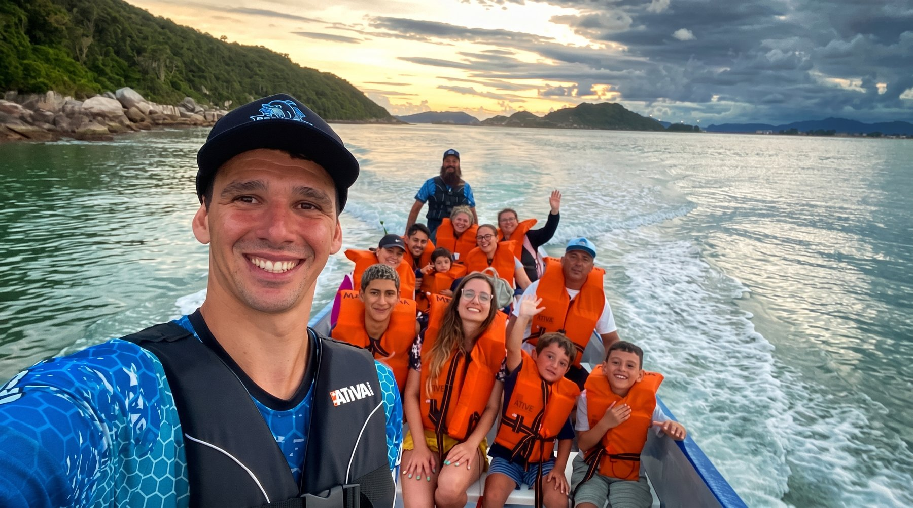
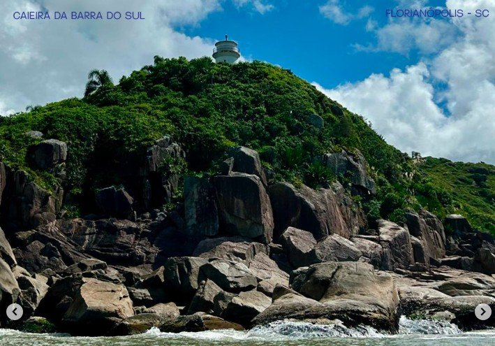
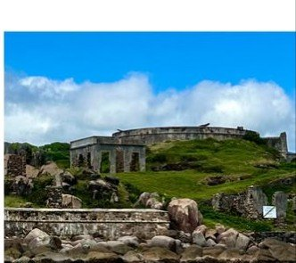
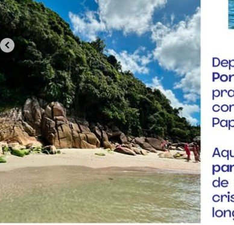
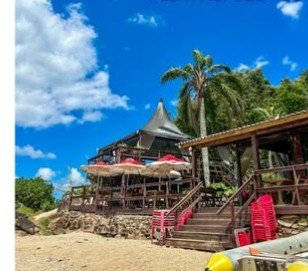

Seis horas de barco saindo da Caieira da Barra do Sul, com pescadores locais como guia: do Farol dos Naufragados às águas cristalinas da Ponta do Papagaio.
Seis horas de embarcação, contadas pelos mesmos pescadores que conhecem cada pedra dessa costa.
Saindo da Caieira da Barra do Sul, seguimos até a Praia dos Naufragados, com parada em frente ao farol. Ali o guia conta histórias da pesca da tainha e da cultura manezinha, parte viva da região.

Navegando em mar aberto, passamos em frente à Fortaleza de Araçatuba — uma aula de história ao ar livre, sem sair do barco.

Uma prainha pouco conhecida, de frente para a Ilha do Papagaio. Aqui o barco para por cerca de uma hora, com água cristalina e tranquilidade longe das praias cheias.

Passamos pela Praia do Sonho e por fazendas de ostras até chegar numa praia praticamente particular. O almoço é no Restaurante Pedras Altas, com parada de aproximadamente duas horas.

Voltamos para a Caieira da Barra do Sul encerrando um dia de natureza, cultura, mar calmo e boa comida — Floripa de um jeito autêntico.
Sem edição de estúdio, sem atores. Esse é um trecho real de um passeio, gravado durante a navegação.
Quero ir tambémRod. Baldicero Filomeno, 20255 — Ribeirão da Ilha, Florianópolis - SC
Resposta rápida no WhatsApp, todos os dias.
Chamar no WhatsApp